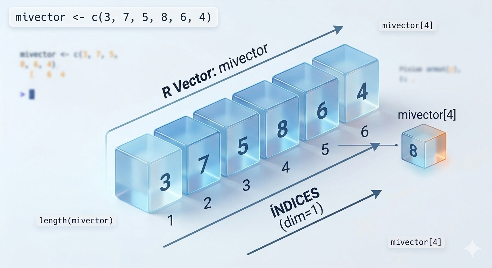

Los vectores son **secuencias o conjuntos de
elementos del mismo tipo de datos**. En R, la unidad básica de
almacenamiento es el vector; incluso un número aislado se trata como un
vector de longitud uno. Se crean utilizando la función c()
(combine).

## [1] 4.10 5.00 6.35## [1] 7.00 4.10 5.00 6.35 2.00## [1] 5## [1] "numeric"Los vectores en R deben contener elementos del mismo tipo de datos. Si intentamos combinar tipos distintos en un mismo vector, R aplicará la coerción, convirtiendo automáticamente todos los elementos al tipo de datos más flexible (o “general”).
# Definimos un vector de caracteres y uno numérico
y <- c("Hola", "Adios")
x <- c(4.1, 5, 6.35)
# Intentamos mezclar textos, números y valores lógicos
y_mezclado <- c(y, x, TRUE)
# Verificamos el resultado
y_mezclado # Todo se ha convertido a texto ("character")## [1] "Hola" "Adios" "4.1" "5" "6.35" "TRUE"## [1] "character"## [1] 6En R, los vectores son indexados empezando por 1 (no
por 0 como en otros lenguajes como Python). Utilizamos corchetes
[] para extraer valores específicos.
mi_vector <- c(8, 9, 3, 4, 5)
# Acceder al segundo elemento
elemento <- mi_vector[2]
print(elemento)## [1] 9## [1] "numeric"Existen diversas formas de crear vectores numéricos ordenados sin escribir cada elemento manualmente:
# El operador ':' genera una secuencia de enteros consecutivos
# NOTA: Los paréntesis alrededor de la asignación guardan el valor y lo imprimen a la vez
(x <- 1:5) ## [1] 1 2 3 4 5## [1] 1.0 1.5 2.0 2.5 3.0 3.5 4.0 4.5 5.0# Función seq(): Permite definir el número total de elementos (length.out)
seq(from = 1, to = 5, length.out = 6)## [1] 1.0 1.8 2.6 3.4 4.2 5.0# Función sample(): Genera secuencias aleatorias
# 'replace = TRUE' permite que los números se repitan
sample(1:6, size = 10, replace = TRUE) ## [1] 3 6 1 3 3 2 2 1 5 1La gran ventaja de los vectores en R es que permiten aplicar funciones u operaciones matemáticas a todos los elementos simultáneamente, sin necesidad de escribir bucles.
## [1] 2 4 6 8## [1] 1 4 9 16## [1] 11 22 33 44Podemos extraer elementos de un vector basándonos en condiciones. Esto es extremadamente útil para limpiar datos.
## [1] FALSE TRUE FALSE TRUE FALSE## [1] 25 40## [1] 10 40